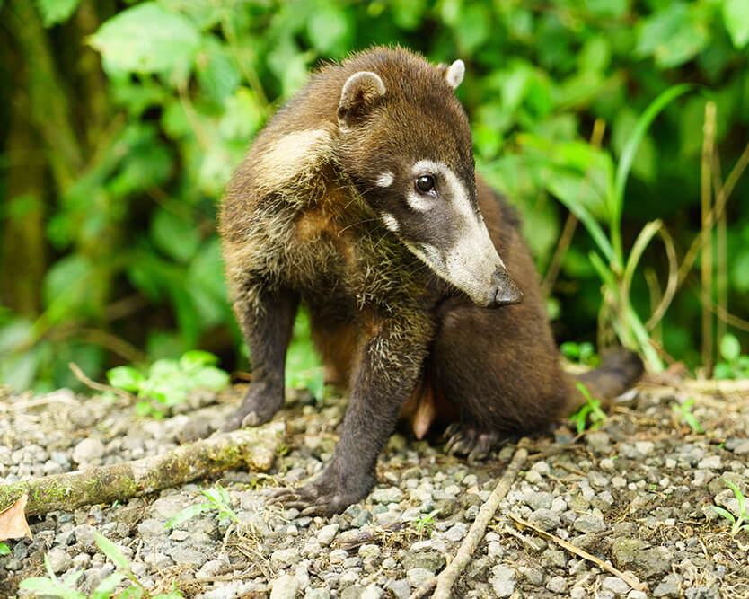

Koati (coati), Orta ve Güney Amerika’nın tropikal ormanlarında yaşayan, rakun ailesine ait sosyal ve meraklı bir memelidir; uzun burunları, halkalı uzun kuyrukları ve çevik yapılarıyla tanınır; ortalama 40–70 cm uzunluğa ve 4–8 kg ağırlığa ulaşır, doğada 7–14 yıl kadar yaşayabilir; gündüzleri aktif olan bu tür, sürü halinde dolaşır ve böcekler, meyveler, küçük omurgalılar ile beslenir; güçlü pençeleri sayesinde toprağı kazarak yiyecek arar, uzun burunları ise koklama ve araştırmada önemli bir avantaj sağlar; iyi bir tırmanıcıdır ve ağaçlarda da rahatça hareket eder; kültürel açıdan ise Latin Amerika halklarının doğa ile uyumlu, meraklı ve çalışkan hayvan sembollerinden biri olarak görülür.